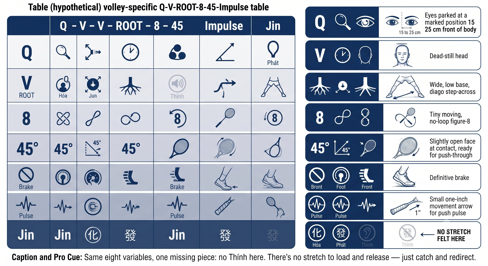
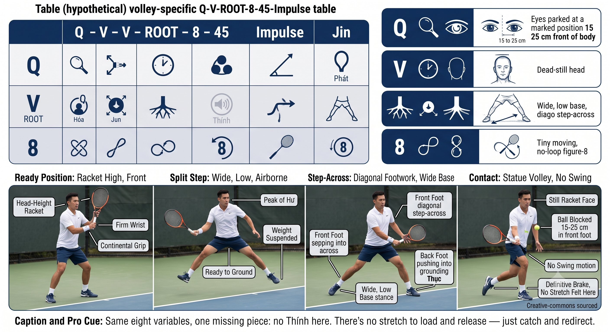
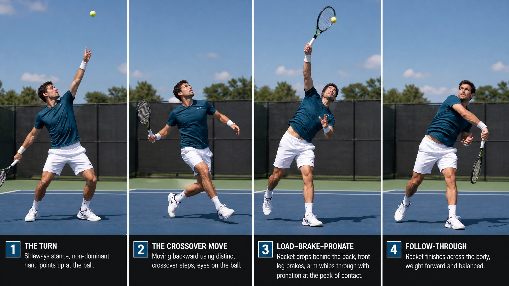
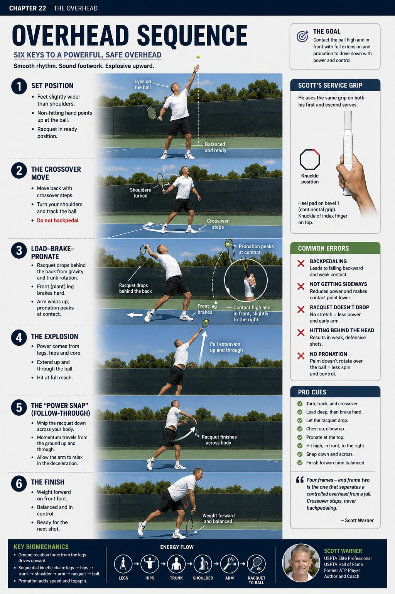
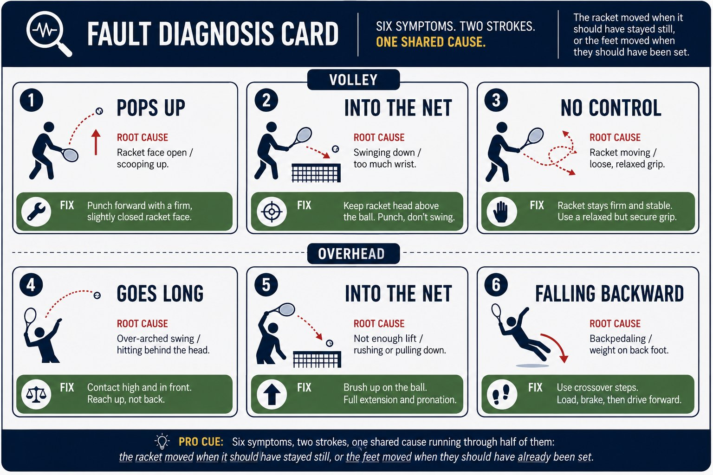

Chapter 24: Volley and Overhead
(English version of Chapter 24 in the United Tennis Handbook)
CHAPTER 24

Figure 1
VOLLEY & OVERHEAD
The Compact Game
No time for loops. Borrow the pace. Block. Redirect. Put it away.
The Volley Is Not a Swing
A volley is a block. You don't hit the ball — you meet it with a firm face and let the ball rebound.
— Henry Pham
The volley has no takeback at all. The racket is already set. The opponent's pace supplies the energy.
Figure 24.1: Same eight variables, volley edition. No takeback, no loop — just park, step across, block, pulse. The face sets before the ball arrives.

Figure 2
The Volley Checklist
If you swing at a volley, you're late. The racket has to be waiting.
— Henry Pham
– Grip: Continental. A firm wrist, a constant 4 out of 10. The face sets early.
– Ready position: racket up, at head height, in front. Split step lands wide and low.
– Contact: out in front, 15 to 25 cm ahead of the front foot. Never at the body.
– Face: slightly open for low volleys, neutral for high ones. Never closed.
– Motion: no swing. Block, absorb, a one-inch push. Feel the ball compress on the strings.
– Footwork: step across on a diagonal, not forward. Wide base. The back foot pushes.
– Eyes: park at the contact zone at the opponent's contact. Hold through the hit.
– Finish: the racket face is still visible. You should see your own strings afterward.
Coach's Tip
Drill: the "statue volley." Your partner feeds, you hit the volley, then freeze at contact for two seconds. If you can't freeze, you swung. 50 balls — no swing means perfect.
Volley Types
Figure 24.2: Low = open face, lift. Mid = neutral, block. High = neutral-to-closed, punch. The contact height decides the face angle and the target — nothing else changes.

Figure 3
Overhead: the Serve You Hit in Play
The overhead is a serve you don't control the toss for. Same kinetic chain — track, move, brake, snap.
— Henry Pham
Figure 24.3: The overhead is the serve you hit in play. Same kinetic chain — track, move, brake, snap. The only difference: you don't control the toss.

Figure 4
Overhead Key Points
1. Turn sideways immediately — the non-dominant hand points at the ball.
2. Move with crossover steps, never backpedaling. Backpedaling makes you fall backward.
3. Contact: slightly in front, to the right for a right-hander, above the head.
4. Let the racket drop behind the back from gravity plus trunk rotation. Don't muscle it down.
5. The front hip or leg brakes, the torso stops, the arm whips, and it pronates.
6. Eyes stay on the contact spot until the ball leaves the strings. No peeking at the target.
7. Finish: the racket crosses the body, weight forward, balanced.
Coach's Tip
Overhead fear comes from looking at the target too soon. Drill: hit overheads and call "contact" the instant you feel the ball on the strings. Only then look. 20 balls — if you peek early, your partner calls it.
Figure 24.4: Track it, move to it, brake it, snap it. The racket drops from gravity, not muscle. The front hip brakes, the pronation peaks at contact — exactly like the serve.

Figure 5
Fault Signals
Figure 24.5: Five volley symptoms, five overhead symptoms — most trace back to just two roots: the face wasn't firm, or the eyes peeked early.

Figure 6
Pre-Net Routine
1. Split step: wide, low, a double Hư.
2. Racket: up, at head height, Continental grip, firm wrist.
3. Eyes: on the opponent's contact zone. Park early.
4. Feet: step across on a diagonal. The tripod screws in.
5. Contact: out in front. Block, then a one-inch pulse.
6. Recover: instant Hư, then back to center.
PRINCIPLE: Volley and overhead give you no time for an SSC load. You're borrowing the opponent's pace. A firm face, instant rooting, a one-inch pulse — the compact game.
RACKET UP. EYES PARK. STEP ACROSS. BLOCK. PULSE. RECOVER.
Checklist
– Volley: Continental grip, firm wrist, racket waiting, contact out front.
– Split step: wide, low, at the opponent's contact.
– Step across on a diagonal, not forward.
– Block, absorb, a one-inch push through.
– Eyes park at the opponent's contact and hold through the hit.
– Overhead: turn sideways instantly, crossover steps, contact in front.
– Overhead: let the racket drop by gravity, the front hip brakes, pronation snaps.
– Finish balanced, the racket across the body, recover instantly.
Where This Leads
This chapter integrates Q-V-ROOT-8-45-Impulse-Jin into the volley and overhead. Chapter 25 covers the slice, the drop shot, and the lob. Chapter 26 covers court geometry and tactics.
Figure 24.6: One family — the compact game. Volley blocks, overhead snaps. Both borrow pace, both brake hard, both pulse one inch. No loops, no time, no excuses.